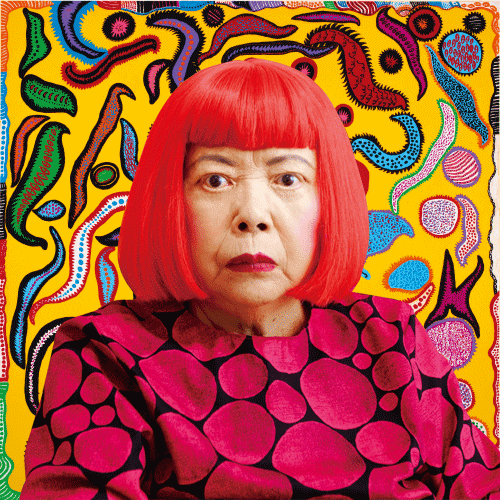
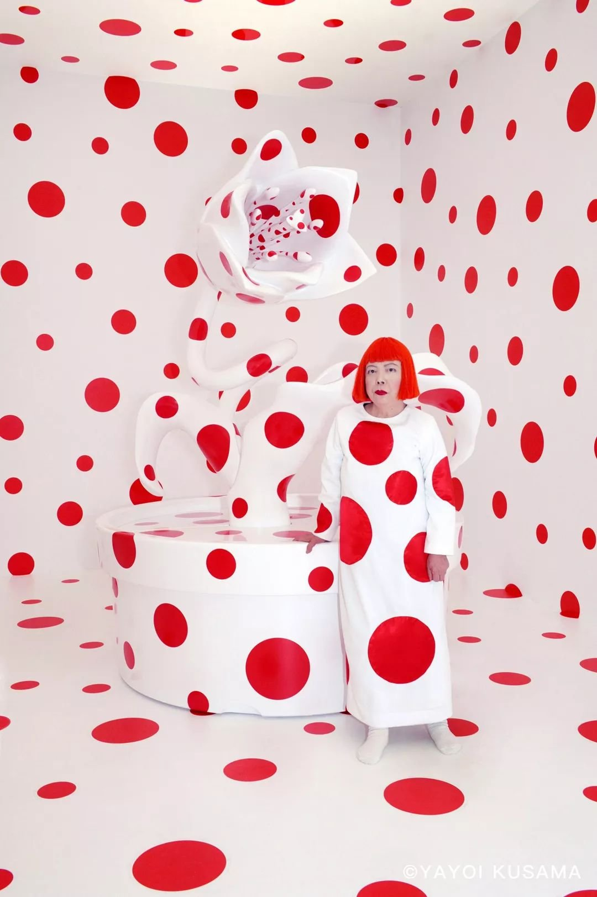
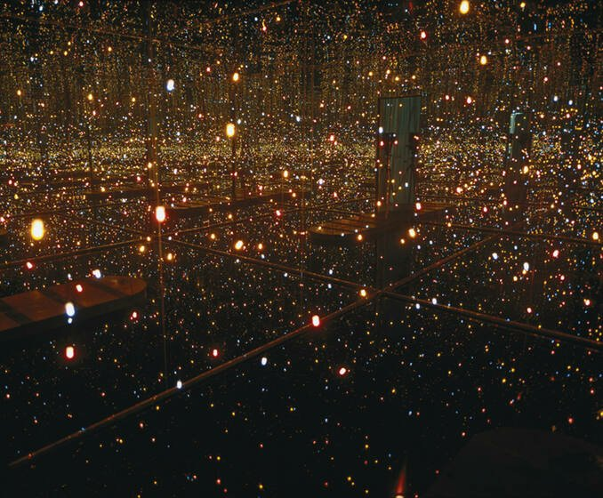
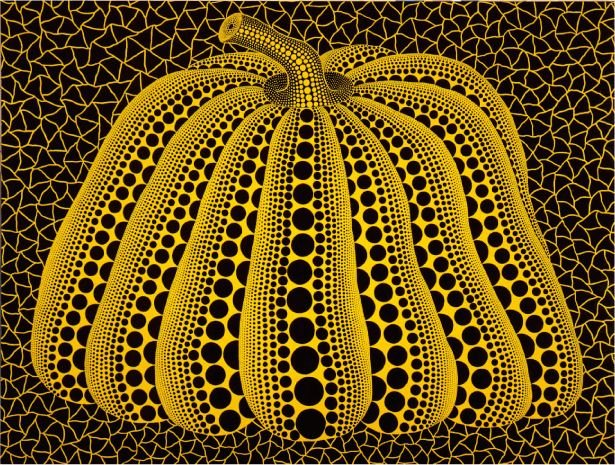
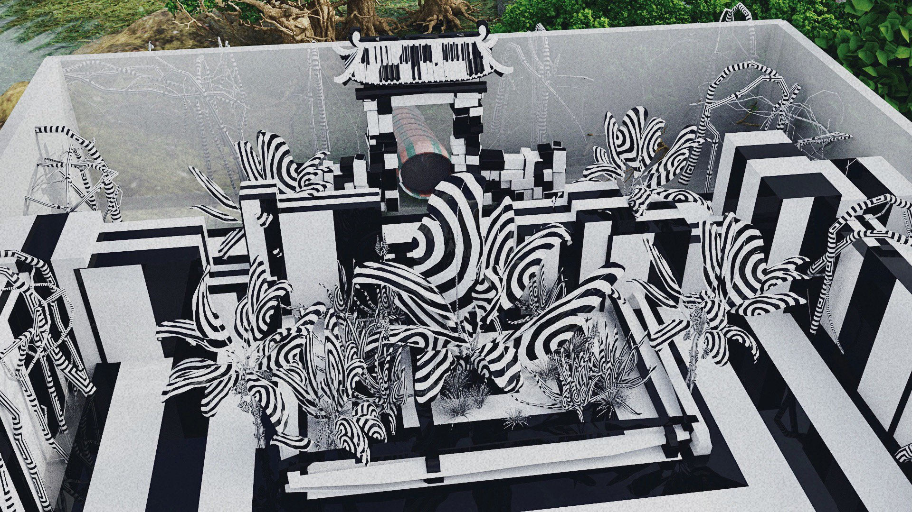
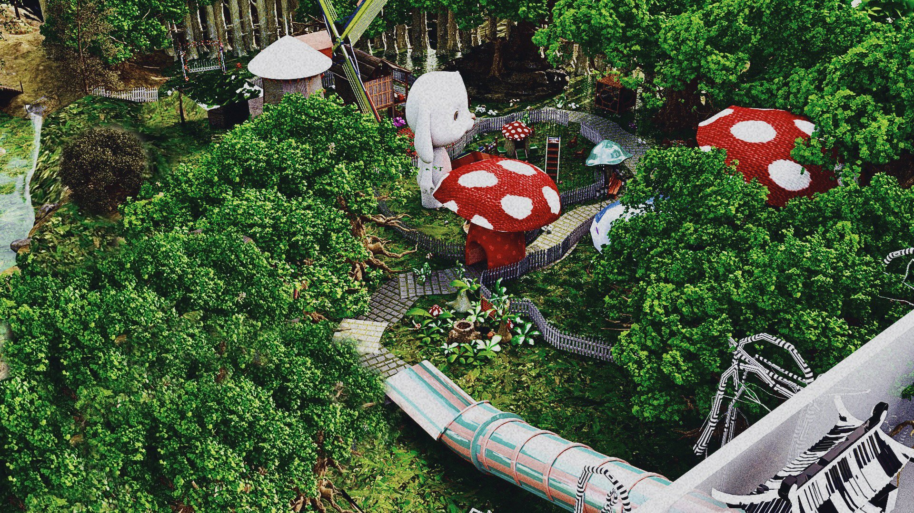
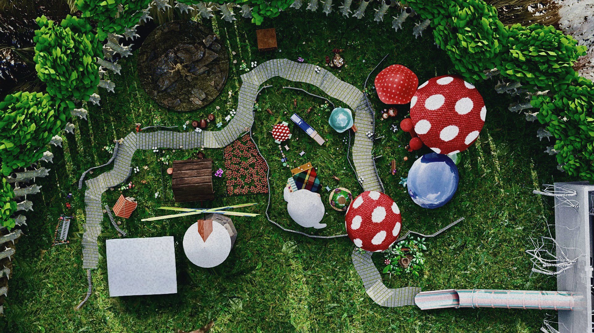
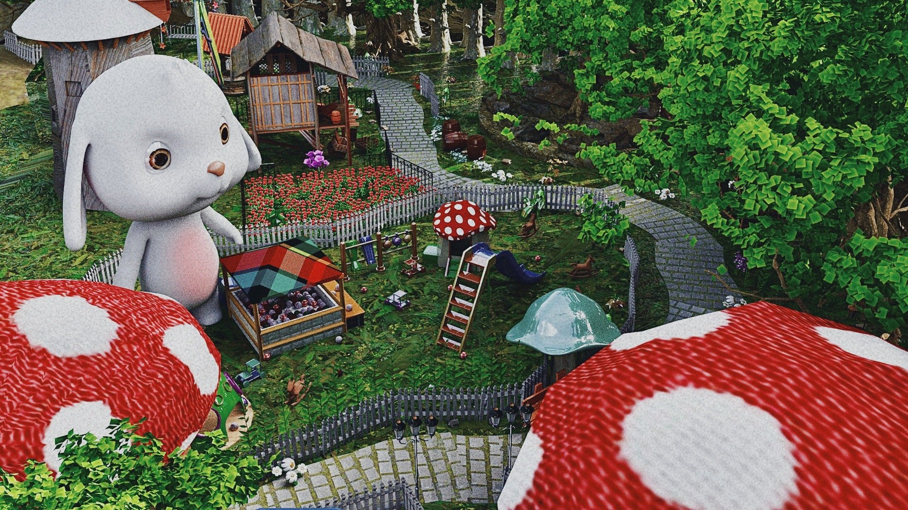

One project in my portfolio Macbeth, one of Shakespeare's four great tragedies, after doing a lot of research and seeing the movies and dramas produced by predecessors, I came up with the idea of making it stand on reality, that is, from its original story background, Scotland in the 11th century. After seeing it, my idea was to show the hero's psychological problems through costumes and accessories. A picture emerged in my mind: a huge black net appeared in the sky, invisible linear giant hands in the control of the hero's fate, like puppets, leading him to the abyss. I think the core of this story is the psychological externalization of the tempted hero. Similarly, at any time, such a thing will happen. This is a story about human nature. Because of the desire of one's heart expands little by little, thus reaching an irreparable point. What makes me interesting is how much this invisible external factor affects a person. I'd like to know more about research and spend more time on it. Back in my work, I used a more modern, simpler and exaggerated form of expression in my design. This form of expression is also integrated into my own symbols, because I think I am a very conservative looking, but my heart is very eager to exaggerate, be more fashionable and more forward-thinking people. In my works, this is totally my own. Through my works, I can reflect the hero's experience of several periods, psychological changes will show different forms through costumes.
With the understanding of the work, I feel deeply attracted by the theme of the symbolic drama. In symbolic drama, symbolism is an integral factor closely related to the theme of the play, the character's personality and even the plot structure, and is an important factor that the playwright consciously considers in the process of planning and layout, because anything in the play has its value of existence and is a kind of metaphor. The real world and the subjective world are actually a whole, coexisting in time and interpenetrating in space, sensing each other. And this kind of penetration is universal. This mysterious penetration and induction exist between all things, between subjective and objective, between people and things, and between all the senses of people. This mysterious universal induction demolishes the barriers of confrontation between things, so that things can express each other through a kind of mutual resemblance, using this thing to symbolize the other thing, using the visible world to know the invisible world, thus making the act of symbolism possible.
Yayoi Kusama is an artist with her very unique signatures. Her works are very recognizable and full of personal style. I can’t help but thinking of her whenever I see dots or pumpkins. Her works are autobiographical, psychological and sexual. She suffers from neurological audio-visual disorder and hallucination from a young age. The world she sees is covered in a huge net, so she keeps drawing, trying to recreate her hallucination with repeating dots. She expresses her fear towards dots to an extreme. I think the reason of her success is that she is courageous enough to face her fears and transform it into art. This is also something I would like to experiment.




I’ve read the script of the symbolist play The Sunken Bell by German playwright Gerhart Hauptmann. In the play, the combination of reality and illusion indicates the writer’s longing for a beautiful world. Hauptmann’s writing is the transition from naturalism to realism, then to symbolism. He focused on discovery of self-worth. The characters walk between reality and illusion, exist in real life and imagination, which provides endless place for imagination. Inspired by him, I am prone to study the struggle between the character’s inner world and reality, which is a very interesting topic to me. To present the inner world of a character, other than costumes, stage design is also an essential element.
Picasso once said, "The artist's eye, can see above reality." We all know that artists will incorporate a lot of personal emotions in their creations, and will use art to express their feelings, the relationship between people, the relationship between people and nature, the relationship between people and the future, and even more imaginary and unrealizable things. Sometimes, due to various limitations, when it comes to expressing what is in your heart, you may not be able to express it or even if you do, you may only express 50% of your original plan. So how to properly express what is in your mind and how to combine what you have learned to express what is in your mind is especially important. Some people may be forced by reality to convince themselves to compromise, but others slow down and take their time to perfect their work. Thankfully, with the development of technology, more and more designers can express their feelings through technological means. Multimedia digital art, immersive VR experiences, virtual costumes and characters, and holographic three-dimensional stages all embody innovative concepts at this stage. Applying these technical means to the stage, combined with the costumes, will produce a very wonderful new experience.
I did the project The Sunken Bell during my graduate studies, and I set it up as an immersive theatre. The audience acted as NPCs playing the characters in the play to go through what the male lead experienced. I designed a scene where the contrast between the real world and the imaginary world is huge. One is a black-and-white distorted space full of lines that create discomfort, while the other is a relaxed, natural, and joyful scene. My aim is to make the audience feel vicarious, to be able to step into the inner world of the characters, to perceive, to experience.





In addition, during my university years, I had the opportunity to participate in a school production of the play The Green Bird, an adaptation of the playwright Maeterlinck's masterpiece, in the creation stage of this play, Professor Zhang Qingshan combined stage design and costumes, and designed a "magic cube" according to the changes in the play's environment, through a set of square boxes, with the actors' performance movements This not only promotes the development of the play but also presents the scenes in the play in a minimalist way. The charm of the stage is infinite, and the imagination of human beings is infinite, and anything can be transformed into a symbolic image with characteristic meaning through clever means.
Covid-19 has caused great damage to the overall theatre world. People can’t enjoy the shows in theatres and participants of the theatre industry have very limited chances to demonstrate their talent. All those bad stories really break my heart, and I believe people who love this art also feel the same. I want to become a part of the power that helps the theatre world to rebuild its glory when the war against covid is over. Based on my academic background, practical experience and my personal interest, my recent focus will be to discover the interaction between digital technologies and traditional theatre arts. To be more exact, I would like to see how AR/VR, holographic projection, digital imaging, 3D modelling and metaverse add color to the modern theater art.